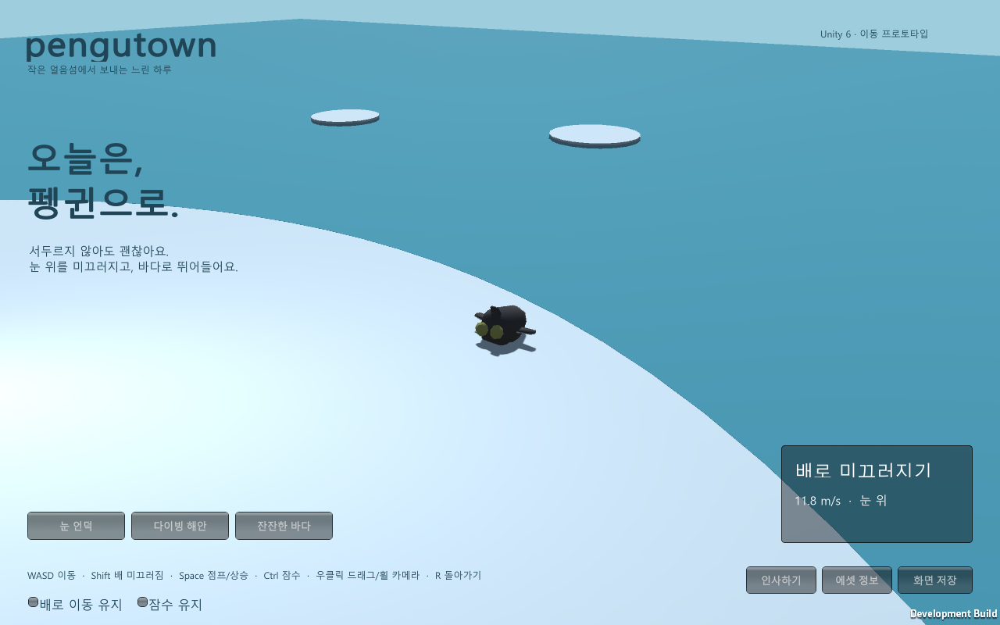
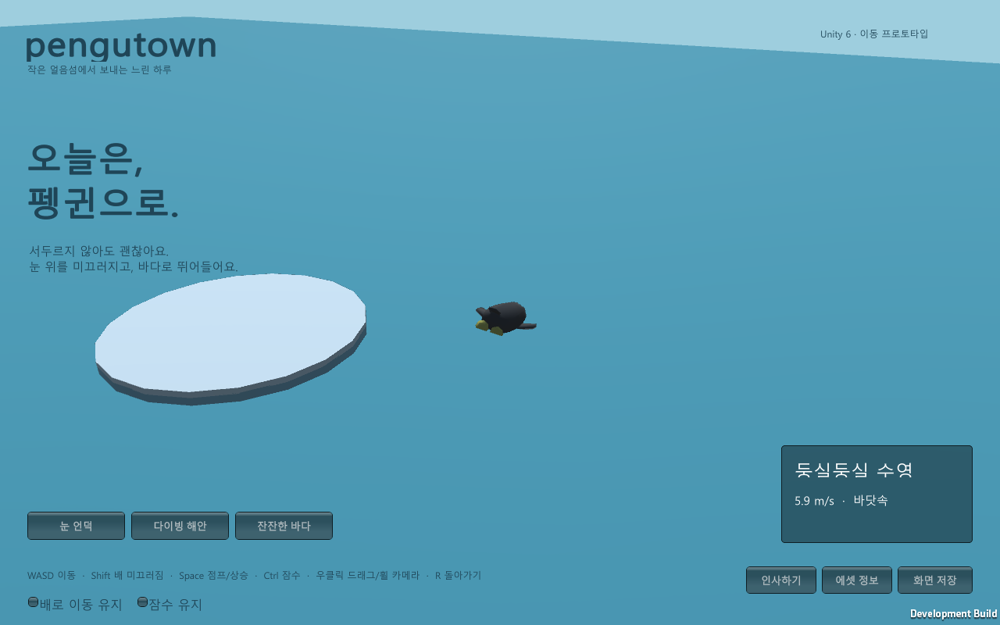
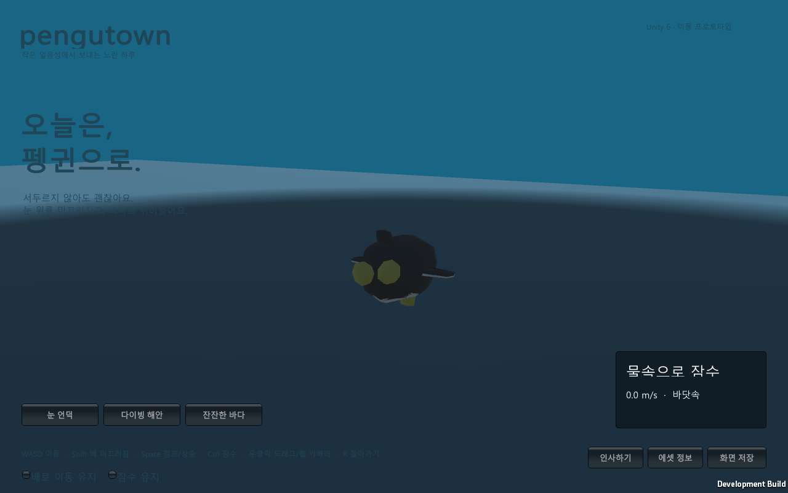

Tracefolio REPORTS & ISSUES
Tracefolio REPORTS & ISSUESUnity 6 펭귄 에셋과 걷기·미끄러짐·다이빙·수영 프로토타입
완료CC0 펭귄 원본을 확보하고 다른 프로젝트와 같은 Unity 6000.0.83f1에서 실제 물리 이동과 Windows 플레이어를 구현·검증했습니다.
작업 결과
Unity 6000.0.83f1의 기본 플레이 가능한 프로토타입을 구현하고 Windows 빌드와 실제 그래픽 실행을 검증했습니다. 걷기, 배 미끄러짐, 경사 가속, 해안 이탈과 다이빙, 수영·잠수·부력 복귀, 카메라와 인사 UI가 포함됩니다.

주변 펭귄은 NPC입니다. 서버 멀티플레이가 구현된 것으로 표시하지 않았습니다.
변경 내용
적용 내용
에셋은 joyfulsquirrel의 Penguin / OpenGameArt를 확보했습니다. CC0이며 원본 ZIP·Blender·텍스처를 보존했습니다. 걷기·대기·수영은 실제 원본 클립이고 Slide/Dive 전용 클립은 없습니다.
구매 후보는 Blocky Penguin(Walk/Swim/Slide 포함, 조회 가격 $2.50), Penguin Squad(24클립, 조회 가격 $1.99, 수영 전용 클립 없음), RifatBilalov Penguin(68클립, walk/slip/swim, 가격·라이선스 등급 미확인)입니다. 유료 파일은 구매·검증하지 않았습니다.
공유 공개 기획의 브라우저 소셜 공간을 확인하고 웹 초안을 작성했으나, 사용자 후속 지시에 따라 기존 프로젝트들의 ProjectVersion.txt와 같은 Unity 버전으로 전환했습니다. 웹 초안은 별도로 보존했으며 Unity 빌드와 구분합니다.
실제 Rigidbody·MeshCollider로 중력과 관성·충돌을 계산하고 물속에서 부력·저항·추진력을 적용했습니다. Blender 액션 표기 범위 12와 실제 키프레임 123의 차이를 검증해 클립 길이를 0.917초로 복원했습니다. FBX 단위 설정으로 생긴 리그·메시 크기 불일치는 FBX_SCALE_ALL로 수정했습니다.
검증
Unity 실제 PhysX QA에서 걷기·미끄러짐·공중·수영·잠수 전환이 모두 통과했습니다. 경사 최고 속도 14.01m/s, 잠수 깊이 -3.80m, 부력 복귀 높이 -0.38m입니다.
Windows 그래픽 플레이어 자동 조작에서도 다섯 상태가 모두 관찰됐으며 잠수 깊이는 -3.80m입니다. 원본 키 길이와 출력 재생 길이를 Unity 임포트 로그로 대조했습니다.


실제 물리 QA JSON · 그래픽 실행 QA JSON
캡처는 게임의 ScreenCapture로 직접 저장한 원본 PNG입니다. 그림을 제작하거나 변형하지 않았습니다. slide.png: 1280×800, 160212바이트; swim.png: 1280×800, 104345바이트; dive.png: 1280×800, 103264바이트. 실제 표시 품질을 직접 확인했습니다.
남은 사항
서버 멀티플레이·공개 채팅·계정·꾸미기·모바일 조작은 미구현입니다. 배 미끄러짐·다이빙은 전용 애니메이션이 아닌 초기 자세 보정이며 물 효과·카메라 전환·조작감은 추가 다듬기 대상입니다. 현재 Windows용 플레이어이며 Unity WebGL 빌드는 수행하지 않았습니다.
로고 원본 미확인으로 프로젝트 로고는 null입니다. 교훈 검토: 전역 지침 변경 없음. Blender 5.2와 이 에셋의 범위·단위 변환 검증 내용은 프로젝트 지침과 조사 기록에 보존했습니다.
작업 시간
- 제안 시간: 조사 5
10분, 기본 구현·검증 추가 2040분 (처음 제시한 예상) - 실제로 완료된 시간: 시작 2026-11-01 16:33:54 KST. 구현·실행 검증 및 보고서 생성 시점 2026-11-01 16:56:58 KST, 누적 23분 4초. 보고서 푸시·공개 배포·외부 접근은 이후 별도 확인합니다.
- XERJ: 미사용 — 빈 프로젝트이며 제공된 XERJ MCP·검색 스크립트가 없어 현재 파일과 로그를 직접 검사하고 rg를 사용했습니다.